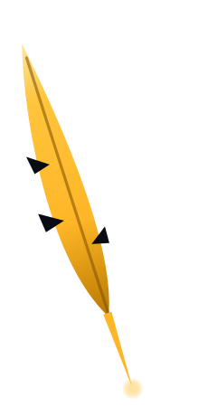

Propuesta de pluma (pendiente de aprobación)
La pluma se construye con el mismo trazo del brazo largo de la chispa del logo real. En la intro escribe la frase, vuela, dibuja el aro dejando la apertura del logo, y al final se encoge hasta ser la chispa que escapa por esa apertura.
